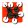

 Split
Component Index > SpiderWeb > SpiderWebManipulation > S
Split a graph at a given Distance
Inputs
| Name | ID | Description | Type |
|---|---|---|---|
| Graph | G | Graph (graphEdgeList) | |
| graphPoints | GP | 3d points of the graph | List of Point |
| Values | V | graphVertex Values | List of Number |
| v | v | cut Graph at value v | Number |
Outputs
| Name | ID | Description | Type |
|---|---|---|---|
| G< | Graph Larger (graphEdgeList) | Generic Data | |
| Graph Larger (graphEdgeList) | Generic Data | ||
| GP | 3d points of the graph | Point | |
| t | parameter of graphEdges t of G | Number |
Copyright © 2016 Robert McNeel & Associates.